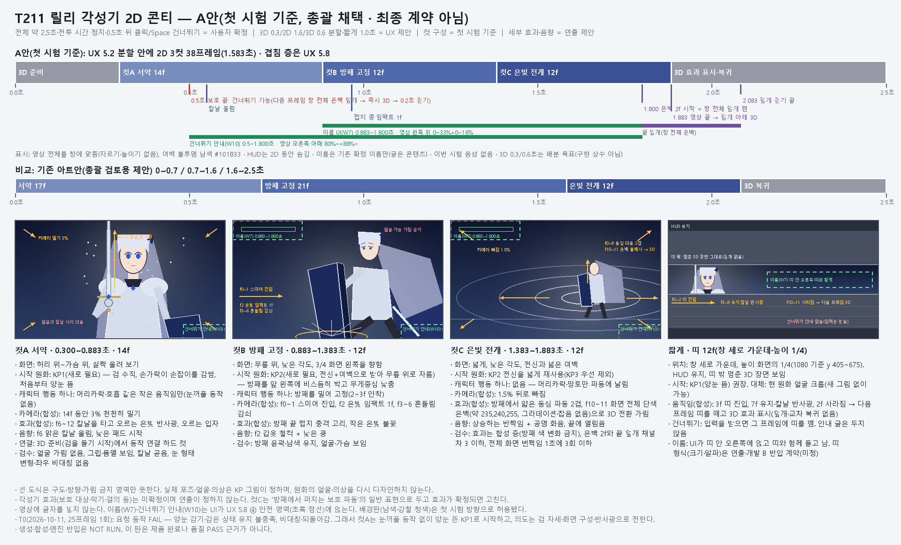
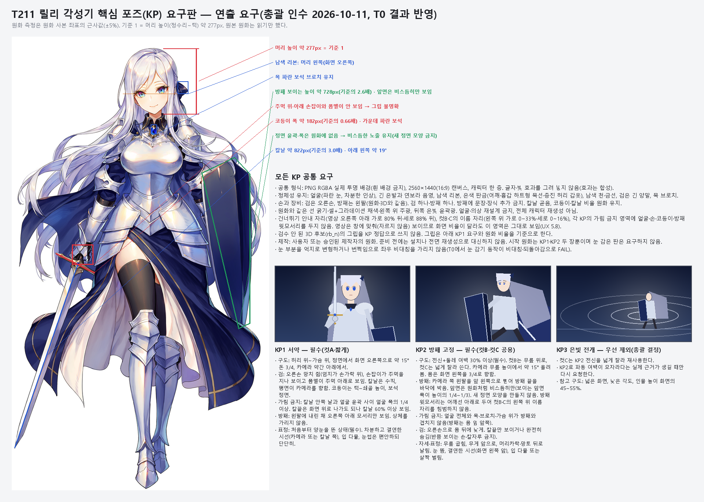

최근 시험 · T0
짧은 얼굴 동작 시험
요청 동작 미통과
영상 정보를 불러오는 중입니다.
양눈을 감고 유지하는 동작을 시험했지만, 눈꺼풀이 비대칭으로 움직이고 처음 표정으로 돌아왔습니다. 이 동작은 채택하지 않았습니다.
다음 컷은 처음부터 양눈을 뜬 자세로 시작합니다. 검과 방패의 분명한 자세, 컷 전환과 별도 효과로 각성기의 인상을 만들 계획입니다.
25프레임 전체 검수판 보기
기존 영상 · v1
처음 전달받은 각성기 영상
비교용 · 수정 필요
영상 정보를 불러오는 중입니다.
검을 세우는 서약 동작이 나오지 않고, 방패가 상체를 가리며 형태와 색도 달라집니다. 빛의 절정은 약 3.7초 뒤에 나와 전체 약 2.5초 목표와 맞지 않습니다.
한 번의 긴 생성 대신 컷마다 적절한 시작 자세를 준비합니다. 작은 움직임과 카메라·빛 효과의 합성을 나누는 방향입니다.
상체 가림 분석판 보기
분석판의 자동 gap 수치는 검출 오류가 있어 판정에 사용하지 않았습니다. 그림으로 가림을 확인한 자료입니다.
다음 제작 방향 · 첫 시험안
서약, 방패 고정, 은빛 전개
3D 준비와 복귀를 포함해 전체 약 2.5초를 목표로 합니다. 가운데 2D 구간은 세 컷으로 나눕니다. 아래 도식은 구도와 시간 배분을 설명하는 콘티이며 실제 원화·완성 영상이 아닙니다.


콘티판을 불러오는 중입니다.전체 각성기 영상은 아직 제작되지 않았습니다. 시작 원화 두 장을 받은 뒤 컷 생성·편집·효과·음향·실제 PC 검증을 진행합니다.
지금 필요한 자료
시작 원화는 두 장입니다
공통: 2560×1440(16:9), 실제 투명 배경 PNG. 글자나 빛 효과 없이 캐릭터만 그립니다. 기존 릴리의 얼굴·은발·갑옷·색·검·방패를 유지하고, 오른손에 검·왼팔에 방패를 둡니다.
KP1 · 검을 세운 서약
- 허리 위에서 가슴 위 구도, 약간 아래에서 보는 시점입니다.
- 양눈을 뜬 차분하고 결연한 표정입니다. 눈을 감은 그림은 필요하지 않습니다.
- 오른손이 손잡이를 실제로 감싸고, 주먹 위 코등이와 아래 폼멜이 보이게 합니다.
- 검은 수직으로 세우되 얼굴과 겹치지 않게 합니다. 방패로 상체를 가리지 않습니다.
KP2 · 방패를 고정한 전신
- 전신과 둘레 여백 30% 이상을 확보합니다. 무릎 위 컷과 넓은 효과 컷에 함께 씁니다.
- 왼팔의 방패를 몸 앞 옆쪽으로 내밀어 끝을 바닥에 대는 자세입니다.
- 방패는 원화처럼 비스듬히 보여 주고, 얼굴·목·브로치·가슴 위를 가리지 않습니다.
- 검은 오른손으로 몸 뒤에 낮게 둡니다. 손이나 칼자루를 애매하게 반만 보이지 않게 합니다.


원화 요구판을 불러오는 중입니다.